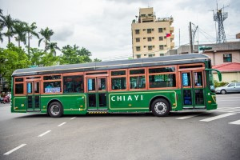
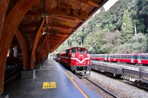
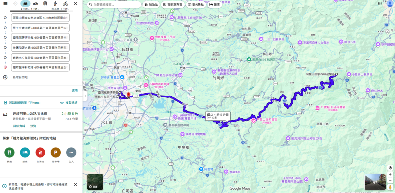

| 公車 | 火車 | 旅遊地圖 | |
| 公車 | |
| 嘉義市區公車網絡方便，串連各大景點與生活區域。市區公車可到文化路夜市、嘉義市立美術館、蘭潭風景區等熱門景點，班次穩定且票價親民，適合遊客與市民日常使用。嘉義也有部分跨縣市公車，方便前往附近的阿里山或其他鄰近城鎮。搭公車旅行，不僅經濟實惠，也能欣賞沿途城市風景，是體驗嘉義生活的一種便利方式。 | |
 |
|
| 火車 | |
| 阿里山森林鐵路是嘉義最具代表性的觀光交通工具，也被稱為「阿里山小火車」。從嘉義市區出發，沿途穿越茶園、林道與山谷，最終抵達阿里山風景區。旅程中可欣賞壯麗山景、雲海與櫻花美景，是遊客體驗阿里山自然風光的重要方式。小火車具有懷舊魅力，也是嘉義特色旅遊的象徵。 top | |
 |
|
| 旅遊地圖 | |
利用 Google Maps 製作這張嘉義旅遊地圖，將嘉義市與周邊熱門景點、美食店家及交通位置完整整理在地圖中，方便旅客快速了解各景點之間的距離與路線。地圖中標示了嘉義著名觀光景點、在地特色美食以及重要交通站點，讓遊客能更有效率地安排旅遊行程。其中也介紹了阿里山國家森林遊樂區，以及具有特色的 阿里山森林鐵路，旅客可以搭乘懷舊小火車欣賞沿途山林、茶園與自然風景，感受嘉義獨特的觀光魅力。透過這張地圖，不僅能更深入認識嘉義的文化特色與自然景觀，也能讓旅程更加便利、充實且有方向。top |
|
 |
|